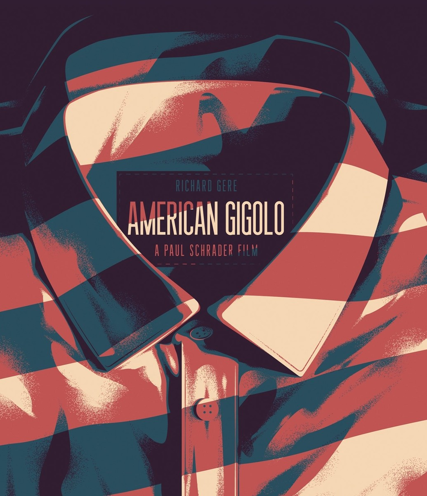

Courtesy of Arrow Video.
American Gigolo
Fidelio may earn a commission if you buy through this link. How Fidelio is paid
The edition
- Label
- Arrow Video
- Format
- 4K UHD
- Runtime
- 117 min
- Aspect ratio
- 1.85:1
- Audio
- Original mono, stereo and 5.1 audio options
- Subtitles
- English SDH
- Region
- Region free
- Rated
- R
- Barcode
- 760137174332
Special features
- 4K remaster from the original negative by Arrow Films
- 4K (2160p) Ultra HD Blu-ray presentation in Dolby Vision (HDR10 compatible)
- Original mono, stereo and 5.1 audio options
- Optional English subtitles for the deaf and hard of hearing
- Audio commentary with film critic Adrian Martin
- Interview with writer/director Paul Schrader
- Six Ways to Sunday, an interview with actor Héctor Elizondo on detecting his character
- The Business of PLEASURE, an interview with actor Bill Duke on Leon's profession
- Montages and Monologues, an interview with editor Richard Halsey on putting American Gigolo together
- The Non-Conformist, an interview with camera operator King Baggot on American Gigolo
- Man Machine, an interview with music supervisor & KCRW DJ Dan Wilcox on the music of Giorgio Moroder
- American Icon, an interview with Professor Jennifer Clark on American Gigolo and the fashion landscape of the 80s
- Original trailer
- Image gallery
- Reversible sleeve featuring original and newly commissioned artwork by Tommy Pocket
As listed by Arrow Video.
Fidelio keeps collections like this one, edition by edition. What Fidelio is →